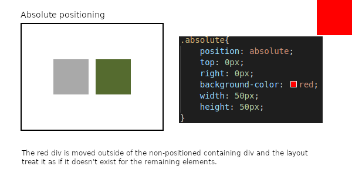
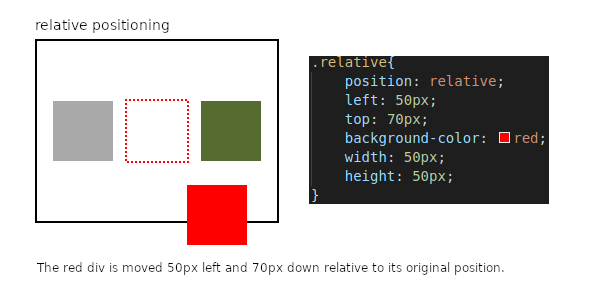
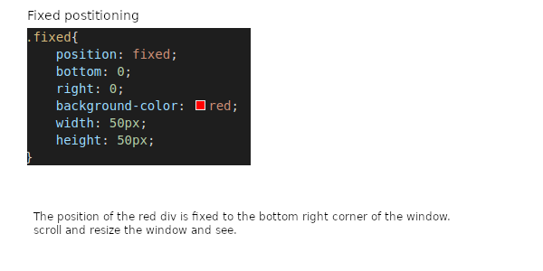

The difference between absolute, relative, and fixed positioning
Absolute, relative, and fixed these are all inputs for the position property of an HTML element and as the name suggests they all relate to how an element is positioned on the page.
Static positioning
To better understand these three it's best to go over static positioning first, this is the default value for the position property if nothing is specified. When an element is statically positioned the properties left, right, top, and bottom will have no effct on it. If the position property has any value other than static the elment is counted as 'positioned'.
Absolute positioning
An absolute positioned element is placed relative to it's nearest positioned ancestor, positioned meaning non static and ancestor is any element which wraps the designated element within it. If no suitable element is found, it will position itself relative to the box(containing-block) when the page is first crated. The left, right, top, and bottom properties will dicate how the element will be positioned. The page layout will aslo not take any absolute positioned elements into account treating it as if it doe not exist.
Relative Positioning
Might seem a bit confusing at first but relative in this case is acutally relative to the element itself. Initially the element is positioned normally within the page when it is first created and then it will be adjusted relative to this position by the left, right, top, and bottom attributes.
Fixed Positioning
With fixed positioning the element is palced relative to the viewport/browser window rather than anything on the page. This means that if you fixed an element to the bottom corner by setting its top and left attributes to 0 it will always remain at the position even when you scroll or reisze the window.
